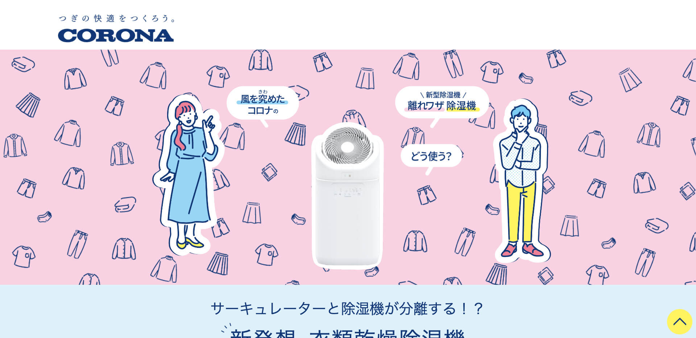

works実績紹介
-
(株)中喜 採用サイト
メインビジュアルでインパクトを与えるべく、画面いっぱいに広げ、スクロールした時にメインのキャッチコピーが消えて、伝えたい内容が徐々に見えていくような調整を入れました。
-

(株)コロナ 製品特設ページ
動きを多く入れて欲しいと要望があったので、極力ユーザーの動きを邪魔しないようにアニメーションを追加しました。
-
新潟交友事業(株)
WordPressを導入し、お知らせ・採用・お問い合わせを実装しました。採用のページでは、採用募集をかけている職種のみ表示し、トップページから採用ページにリンクする箇所は、募集している職種がない時はリンクしないように調節しております。
-
(株)エクセレントホーム 採用サイト
Chart.jsを利用し、グラフをHTMLで表現しました。数値のカウントアニメーションも追加し、閲覧したユーザーに印象が残るようにしております。また、募集要項ページからお問い合わせにリンクした際は、そのページに合った職種がフォームで選択された状態になるように調整しました。
-
すしあらい
メインビジュアルにYoutube動画の埋め込みを行いました。高画質で掲載したいという希望がありましたので、読み込み時間にローディングアニメーションを挟むことでユーザーの離脱を抑えました。
-
(株)鈴木コーヒー BARREL COFFEE BAUM ECサイト
無料ネットショップ作成サービスの「BASE」を利用して、バウムクーヘンの販売サイトを構築しました。サイトのSEO向上に向けて、サイト内の文言について担当者と話し合い調整を行いながら進行しました。